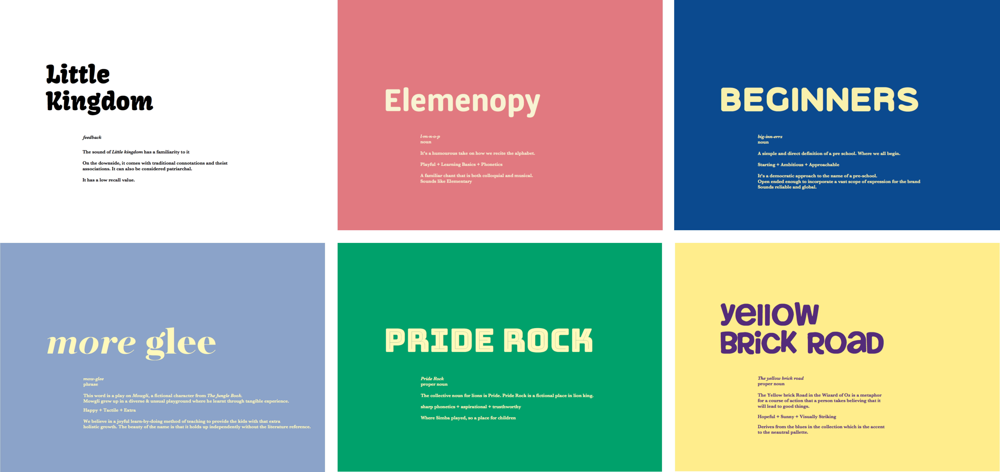
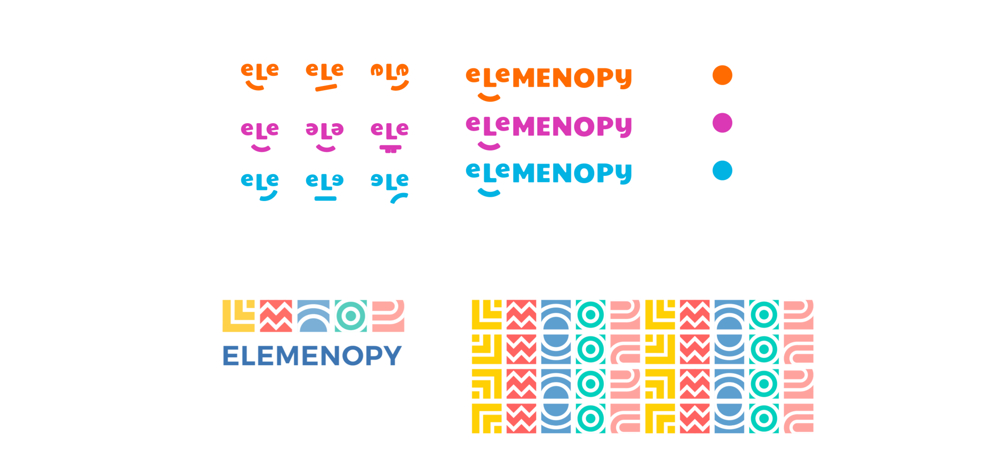
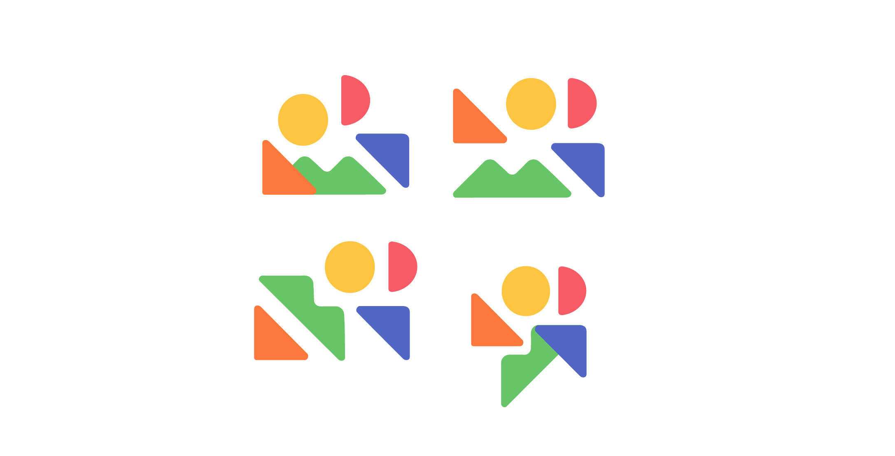
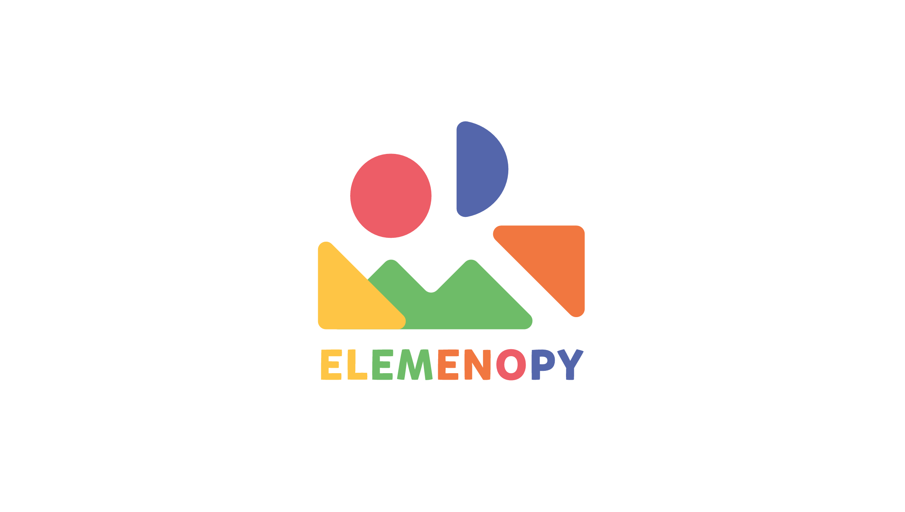
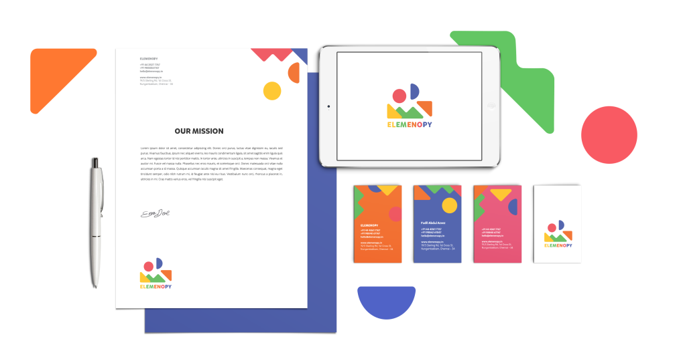
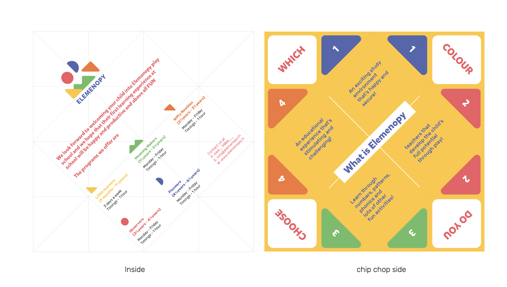
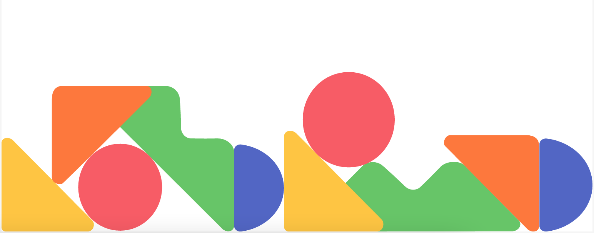

When a friend decided to start her own preschool out of a bungalow in Chennai, she reached out to us (Jyothi and me) to work on the name and brand design. We set out to visually define what learning looks like for two to five year olds. The opportunity statement we worked with was, 'How might we design the identity of a preschool to reflect an inclusive learning experience?'

The name elemenopy resonated unanimously, as the phonetic association of the sung alphabet felt familiar and timeless.
For the logo and identity, we presented the 3 routes, and ultimately picked one that was a simple play of shapes derived from the alphabet, since it perfectly complemented the ‘learning basics’ philosophy that the name intended.
We wanted to create a sense of belonging and comfort for the children, across all brand communication — and these shapes allowed for that flexibility.

For the final selected logo, the shapes are a careful abstraction of the letters themselves, that take on many meanings across communication collaterals, effortlessly. We defined a playful colour palette and used the font Mikado for the wordmark.
   Overall it has been one of the more fulfilling projects that I have helped bring to life, and I enjoy watching it grow. Go to their instagram →
